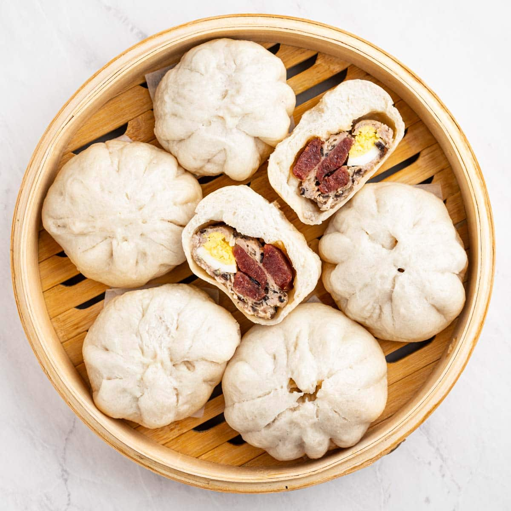

Bánh Bao Full Recipe  Dough Ingredients All purpose flour - I would highly recommend using AP flour for the desired result because it has the appropriate amount of protein to give the bao the correct texture. Baking powder - Baking powder helps the dough expand when it is steaming. Milk - Warm milk helps activate the yeast and gives it that tender texture. Make sure to use whole milk not reduced fat milk. Instant yeast - I know it's really hard to find yeast right now, but it is absolutely essential. Make sure to check your yeast is alive before using. Combine the warm milk with the yeast, and let it stand for 10 minutes to check. Neutral oil - Any type of neutral oil should work for this recipe. I used vegetable oil. Granulated sugar - White sugar helps give the dough some sweetness which is essential to balance out the more salty flavors of the fillings. There is also a little bit of sugar in the filling. Filling Ingredients Ground pork - No substitutes for ground pork. Wood ear mushrooms - Wood ear mushrooms can usually be purchased dried on Amazon or at Asian grocery stores. A good substitute for wood ear mushrooms is shiitake mushrooms or any kind of brown mushroom. Yellow onion - Sweet yellow onions are the preferred onion to use. A good substitute is white onions. Seasonings (fish sauce, oyster sauce, sugar, salt, and pepper) - Fish sauce and oyster sauce are sometimes hard to find. If you can't find fish sauce, leave it out. If you can't find oyster sauce, substitute with garlic powder. Chinese sausage - Adds a salty flavor to the bao. You can leave this out if you can't find it or you don't like it. Eggs - I used large boiled eggs for this recipe. I use 1/4 of an egg per bao. A substitute for regular eggs is quail eggs. White vinegar - The white vinegar is added to the water you used to steam the baos. The vinegar helps give the baos their signature white color. Directions Firstly, combine flour and baking powder and set aside. Add warm milk and yeast to a small bowl. Let it stand for 10 minutes until it foams. Then add in your oil and sugar and stir. Combine the wet and dry ingredients. Mix until a soft dough forms. Dump the dough onto a floured surface and knead for 10 minutes. Add more flour if the dough seems too wet. After kneading, the dough should slowly bounce back at you when you poke it. While your dough is rising, make your filling. The filling is composed of a ground pork mixture, Chinese sausage, and boiled eggs. Thinly slice your sausages. Boil your eggs and slice them into 4 pieces. Now make your ground pork mixture. Mix ground pork, oyster sauce, fish sauce, salt, pepper, sugar, minced yellow onions, and minced wood ear mushrooms. Divide the mixture into 16 round pieces and set aside. The goal of this process is to make sure you have everything ready to go to make your baos once it finishes rising (proofing). Once those steps are completed, you are ready to assemble! Evenly cut the dough to your portion sizes but for references, a palm size amount of dough should be fine. Once laid out, place a tablespoon or your liking of filling in onto the dough and wrap. Once you have wrapped the fillings with the dough, it's now time to steam! Using a steamer, add four at a time per batch and steam for about 15 or so minutes. Once that is completed, you are finished, enjoy!